BackOffice Angular2
L'application LéaPulse se présente sous la forme d'une SPA (Single Page Application) développé avec l'aide du Framework Angular2 et du thème bootstrap Endless.
Elle se base sur le language Typescript (trés proche du Javascript ES6), qui nous permet de compiler l'application en JS ES5 ou JS ES6 selon la cible voulue.
Dans notre cas présent, l'application sera transformé en Javascript ES5, puis minifié (UglifyJS) et regroupé (Webpack) en uniquement 3 fichiers.
Nous vous recommandons d'avoir fait les premiers tutoriaux Angular2 avant de poursuivre Tuto First Start à SDV vous pouvez aussi consulter Ng-Book2 en PDF
De plus, vous pouvez à tout moment vous référer au "cheatsheet" suivant pour les syntaxes de templating CheatSheet
Pour commencer rapidement nous vous conseillons de lire au minimum le découpage de l'application et la partie génération de code de cette documentation
Sommaire
Installation
Pour commencer à developper il vous faudra un environnement node > 5
Puis vous devrez installer les dépendances par "npm install --dev"
Un serveur de développement est disponible par: "npm start", ainsi vos développements seront compilés à la volée
Ligne de commande
- npm install => pour installer les lib pré-requis
- npm update => pour mettre à jour les libs
- npm start => pour lancer l’appli (ouvre automatiquement un navigateur synchronisé, sinon voir localhost:8080)
- npm run gen => lancer le générateur de code (pour créer des pages de cruds, générer les routes, etc…)
- ng generate => génération des components, services, pipes, directives, modules
- ng build => créer une version compilé, non minifié (accessible en local sur lea-pulse-spa.docker.dev)
- ng build --prod => créer une version compilé, obscursifié et minifié (accessible en local sur lea-pulse-spa.docker.dev)
Le Découpage de l'application
Pour commencer, voici comment se découpe notre application (Certains de ces dossiers ne sont pas versionné et seront uniquement présent une fois qu'ils auront été généré)
/bin
=> contient des scripts js executé en node uniquement sur le post de dév ( ce sont des facilitateurs ) /generator /generators => contient les scripts js de génération de code typescripts (scanné automatiquement par “npm run gen”) /templates => contient les fichier 'type' de génération de code
/demo
contient un slideshow de demo de l'appli
/dist/
(ce dossier est versionné pour etre utilisé par apache) => contient le résultat final de la compilation du typescript vers javascript et les fichiers de mapping pour le debug app-xxx.js => l'application compléte convertie en js app-xxx.js.map => le fichier de mapping permettant de retrouvé la ligne de TS à l'origine d'un bug JS vendors-xxx.js => le fichier regrouppant les librariers tierce compilé ensemble vendors-xxx.js.map => le fichier de mapping pour débugger les librairies
/docs
contient la version généré de la documentation
/e2e
contient la configuration des test end-to-end
/node_modules
contient les scripts importés par npm ( ce dossier n'est pas versionné, les fichiers qui nous intéresse là dedans seront intégré au build)
/src/app
/_core
contient les classes devant etre chargé une seul fois (notamment les services), et faisant partie du core
/_modules
contient les différents modules lié a un client
/_shared
contient les classes pouvant etre chargé plusieurs fois (commes les components, pipes, directives et models) faisant partie du core
/<module>
contient un module de base fournie avec chaque instance de pulse.
chacun d'eux peuvent contenir
/_widgets
pour les composants partagé
/_directives
/_pipes
/_services
/_models
/<page>
<module>.module.ts
définie le contenu de ce module et les différent import necessaire
<module>.routing.ts
définie les différente routes de l'application
/src/assets/
contient les libs non accessibles par un gestionnaire de paquets, et du coup qui sont versionné chez nous
/src/environments/
contient des conf spécial par environnement (inutilisé chez nous, car chaque 'version' correspond a un seul env)
/typings
(sera remplacé petit a petit par node_modules/@types) => contient les descriptions typescript (.tsd) des scripts uniquement présent à l’éxécution du javascript, certain sont installé manuellent /browser => contient les tsd importés par typings pour les scripts exécutable dans le navigateur /main => contient les tsd importé par typings pour les scripts node
Les lignes de commandes
Lancement du serveur de developpement
Génération d'un module
ng g module modules/mon-module --routing
Les générateurs de code
Angular-CLI
le programme angular-cli fournie quelques générateur de code, vous permettant la création de: * ng g module * ng g component * ng g service * ng g pipe * ng g directive
ceux-ci peuvent etre executé à la racine du projet, ou dans un module
CRUD
Le générateur de CRUD vous permet de créer une page liste (avec datatable) et une page d'edition, ainsi que le service nécessaire, a partir d'un model
npm run gen crud
C'est alors que plusieurs questions sont posées:
- Quelle URL voulez-vous pour votre page de CRUD ? : l'url à rentrer est relative et s'insérera dans le dossier 'app/components'. Exemple: si l'on choisi l'url 'gestion/blocs', cela correspondra à la route du routeur, et les fichiers seront créés dans 'app/components/gestions/blocs/.'.
- Sur quel modèle se base cette page ? : rentrer le nom du fichier modèle sans l'extension (ex: app/models/bloc.ts => "bloc").
- A quelle API Laravel voulez-vous vous connecter ? : rentrer le nom de la route RESTful choisi dans Laravel. Par exemple, si votre route est définie en Laravel comme ceci : "Route::resource('bloc', 'BlocController');", alors vous pouvez rentrer "bloc".
- Quels champs du modèle souhaitez-vous cacher ? : choisir les variables dans le modèle que vous ne souhaitez par afficher dans la Datatable. Le champ '_id' est caché par défaut. Il est possible de ne rentrer aucune information et donc de tout afficher, en appuyant simplement sur Entrée.
Modèles
Voici un exemple de modèle à utiliser pour le générateur de CRUD.
export class Bloc {
public _id: string = "";
public title: string = "";
public type: string = "";
public model: string = "";
public content: string = "";
public constructor(obj?: any) {
this._id = obj && obj._id || null;
this.title = obj && obj.title || "";
this.type = obj && obj.type || "html";
this.model = obj && obj.model || "";
this.content = obj && obj.content || "";
}
}
__
Templates
Les templates utilisés sont présent dans '/bin/generator/templates/crud'. Il y a 6 templates donc 6 fichiers écrits:
-
components.ts.base : le composant d'entrée du CRUD, avec le layout principal de la page (de base ne contient que le router).
-
componentsIndex.ts.base : le composant de liste du CRUD, avec la Datatable de tout les éléments correspondant au modèle.
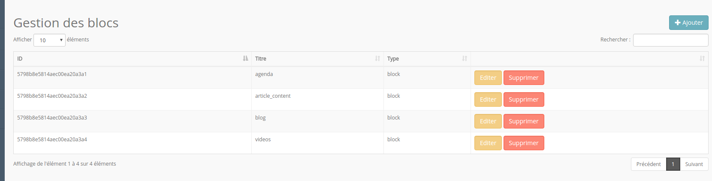
- componentsEdit.ts.base : le composant d'édition d'un élément.
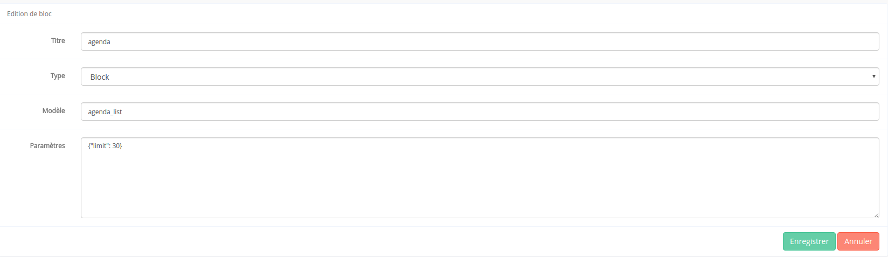
-
service.ts.base : le service qui communiquera avec l'API Laravel.
-
module.ts.base : le module de chargement de ces différents widgets
-
routing.ts.base : la définition des routes du module
Structure
Dans les composants générés, la Datatable est automatiquement construite en fonction des variables du modèle et des champs choisi pour être caché au moment de l'exécution du générateur.
Il est néanmoins possible de la modifier manuellement. Pour cela, il faut se rendre dans les deux composants générés, et décommenter la déclaration de structure. Il suffit de la remplir en respectant le pattern : 'id' => nom de variable du modèle, 'label' => nom affiché sur la page.
Cette personnalisation de structure est possible pour le composant d'affichage des éléments ainsi que pour le composant d'édition.
Les widgets génériques
Bloc-Card
Bloc de contenu sous forme de carte
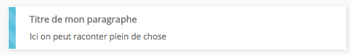
<bloc-card class="col-lg-4" [data]="{type:'divers', title:'Titre de mon paragraphe', content:'Ici on peut raconter plein de chose'}"></bloc-card>
- title: pour changer le titre du bloc
- content: pour changer le contenu du bloc
- type: peut prendre la valeur: paragraphe, image, divers, autre2, autre3 (ceci le fera changer de couleur)
BreadCrumb ( Fil d'ariane )
Ce widget ne doit s'integrer qu'une fois dans la page. Pour son utilisation voir à travers le service BreadCrumb
Button 3D
Permet de faire des boutons poussoir en 3d

Utilisation :
<button3d [icon]="'check'" [class]="'success'" [size]="'btn-sm'" (click)="afficheBootbox('alert')" > Valider</button3d>
<button3d [icon]="'code-fork'" [class]="'danger'" (click)="afficheBootbox('alert')" > Pousser en prod</button3d>
<button3d [icon]="'cloud'" [class]="'primary'" [size]="'btn-lg'" (click)="afficheBootbox('alert')" > Envoyer dans le cloud</button3d>
Chevron
Le widget chevron permet de cacher facilement le contenu d'un bloc
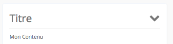
- hidden : Input/Ouput: Etat ouvert/fermé du bloc lié (boolean)
Exemple1: Utilisation avec une var locale et le display hidden (caché par la css) :
<h3>
<chevron [(hidden)]='contenu.hidden' class="pull-right"></chevron>
Titre
</h3>
<div #contenu>
Mon contenu a cacher
</div>
Exemple2: Utilisation avec une var typescript et ngIf (caché par le dom/js):
public mavar: boolean = false;
<h3>
<chevron [(hidden)]='mavar' class="pull-right"></chevron>
Titre
</h3>
<div *ngIf='mavar'>
Mon contenu a cacher
</div>
CKEditor
Le widget ckeditor permet d'intégrer l'éditeur de texte simplement.

Utilisation :
<ckeditor [(content)]="article.chapeau" [id]="'chapeau_text'"
[rows]="4" [disabled]="false" [config]="config1"></ckeditor>
- content : Le texte contenu par l'éditeur, lié dans les deux sens afin de mettre à jour automatiquement la variable dans le composant appelant
- id: Un identifiant unique pour l'éditeur.
- row: Permet de définir la hauteur de l'éditeur.
- disabled: Si il est à true, le ckeditor est remplacé par une div affichant juste le contenu. S'il est passé à false par la suite, le ckeditor apparaitra.
- config: La configuration de l'éditeur (choix des actions possibles ou non).
Corner Button
Datatable

Exemple de template:
<loader [condition]="data_tab">
<datatable [data]="data_tab" [structure]="structure" [buttons]="buttons" [parent_scope]="scope"></datatable>
</loader>`
Exemple de component:
public structure = [
{ id: "id", label: "ID"},
{ id: "name", label: "Nom du champ"}
];
public buttons = [
{
text: 'Editer',
action: this.edit,
class: "btn btn-warning"
},
{
text: 'Supprimer',
action: this.confirmDelete,
class: "btn btn-danger"
}
];
//scope sur lequel appliquer les fonctions des boutons
public scope = this;
//un exemple de données
public data_tab = [{id: 1, name: "Antoine"}];
DatePicker
Ce widget permet d'afficher un champ de texte qui fait apparaitre un calendrier.

Utilisation :
<datepicker [(ngModel)]="date_publi" view-format="DD/MM/YYYY" model-format="YYYY-MM-DD"
first-week-day-sunday="false"></datepicker>
- ngModel: La valeur de le date.
- view-format: Le format de date tel qu'il sera affiché dans le champ de texte.
- model-format: Le format de la date tel qu'il est dans la variable.
- first-week-day-sunday: Un booléen permettant de préciser pour l'affichagfe du calendrier si les semaines doivent commencer le dimanche (true) ou le lundi (false).
FileUpload
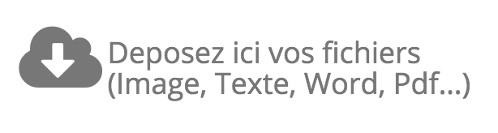
Ce widget permet de faire un upload de fichier sur IBP et de recuperer le resultat du traitement
Exemple dans le template:
<file-upload [container]="container_name" (fileIsUploaded)="handleFileContent($event)" [disabled]="!can_modif"></file-upload>
Exemple dans le component:
private handleFileContent(retour){
//ajouts des images au complements
if(retour.response && (retour.response.type === "img" || retour.response.type === "image") ){
//ici je créer un complement, contenant l'id de mon image sur ibp
this.new_cplt = new Complement({
type: this.complement_types.image.value,
id_l2_img : retour.response.content._id
});
this.complement_selected = null;
this.saveComplement();
}
//ajout du texte direct dans le texte de l'article
else if(retour.response && retour.response.type == "text"){
this.text_editor.instance.insertHtml('<p>'+"PLACEHOLDER-"+retour.response.content+'</p>');
}
else{
console.log('type de donnée non géré');
}
}
Graph
Loader
Le widget loader permet de cacher facilement le contenu d'un bloc durant son chargement
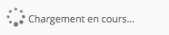
- condition : condition d'affichage de la roue de chargement, quand la condition est vrai on affiche le ng-content,mais tant que la condition est false on affiche le loader
- type : Facultatif, Type de template d'affichage pour le widget, de base est une div, mais peut etre de type list ou panel
Exemple:
<loader [condition]="!ready" [type]="'panel'">
Mon Contenu
</loader>
Menu
Le widget de menu permet l'affichage des barres constituant le menu. Les entrées du menu s'affichent en fonction des permissions associées et des permissions de l'utilisateur. Les entrées sont gérables via la page de gestion des menus.
Menu interne
Ce widget permet d'ajouter un second niveau de navigation, à l'intérieur d'un widge de page.
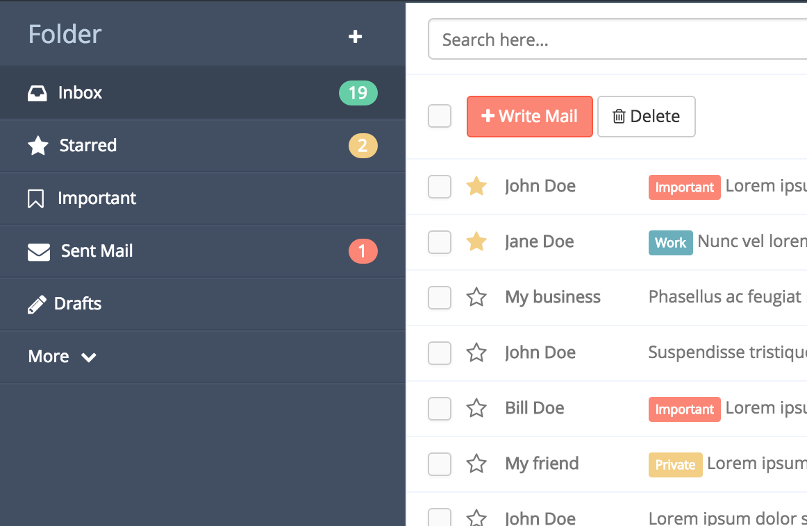
Il se définie en lui fournissant au moins une liste d'item, exemple:
import {MenuInterneComponent, MenuItem, MenuItemBadge} from "../_shared/_widgets/menu_interne/menu_interne";
...
private menu_items = [
new MenuItem({
icon: "inbox",
title: "Inbox",
badge: new MenuItemBadge({
class: "success",
number: 19
})
}),
new MenuItem({
icon: "star",
title: "Starred",
badge: new MenuItemBadge({
class: "warning",
number: 2
})
}),
new MenuItem({
icon: "star",
title: "More",
subitems: [
new MenuItem({
title: "Spam",
badge: new MenuItemBadge({
class: "warning",
number: 2
})
}),
new MenuItem({
title: "Trash"
})
]
})
];
et dans la template:
<menu_interne
[items]="menu_items"
[title]="'Gestion Multi-Média'"
(select)="menuClick($event)"
[icon]="'plus'"
[tooltip]="'Exporter vers un media'"
(button)="newMedia($event)"
(toggle)="menuToggle($event)">
</menu_interne>
- [items]: Array - Une entree du tableau correspond a un element de la liste, on peut y ajouter des 'subitems' pour un niveau supplémentaire
- [title]: string - Titre du menu
- (select): EventEmitter - renvoi l'item selectionné lors d'un click
- [icon]: string - classe d'icone du bouton de droite
- [tooltip]: string - texte au survol du bouton de droite
- (button): EventEmitter
- renvoi true lors d'un click sur le bouton de droite - (toggle): EventEmitter
- renvoi l'état (true= ouvert, false= fermé) du menu lorsqu'on le ferme/ouvre
Meta-handler
Insère un bloc de formulaire listant les champs issus de la table méta attachés à un type d’entité. Plus d'infos sur la gestion des metas dans le chapitre BackOffice Laravel5 - Metadata.
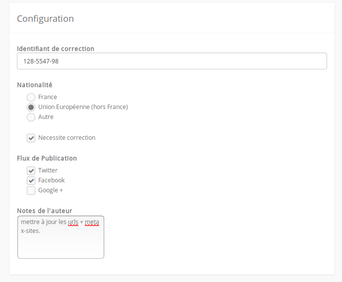
<meta-handler [type]="entity.type" [id_subject]="entity.id" [id_version]="entity.version" [(metadatas)]="entity.metadatas"></meta-handler>
- [type]: String - Requis - type d'entité ciblée i.e: Element, Topic, User...
- [id_subject]: String - Requis - Identifiant (sans version) de l'entité en cours d'édition.
- [id_version]: String - Identifiant de version de l'entité en cours d'édition.
- [(metadatas)]: Array[Meta] - Tableau de Metas.
autocomplete

Le composant d'autocomplete en Angular doit être appelé de la façon suivante:
<autocomplete [config]='...' [data]='...' (valid)="function($event)"></autocomplete>
- [data]: Array - tableau contenant les données à traiter par l'autocomplete
- [config]: Object - permet la config du widget, doit contenir:
- fieldName: String - nom de l'attribut du tableau data qui sert à l'affichage dans le champ
- fieldValue: String - nom de l'attribut du tableau data qui fait office de valeur de retour par le widget (si vide, on renvoi l'object complet)
- begin: Number - nombre de caractères à entrer dans le champ avant que l'autocomplete ne se lance
- defaultValue: String - valeur par défaut à insérer dans l'input d'autocompletion
- placeholder: String - Placeholder du champ
- (valid): Function - fonction appelée lorsque le champ est valide
Pager
Progress Bar
Search Bar
La barre de recherche (1) permet d’effectuer des recherches très génériques sur le site sans quitter la page en cours de visite. Les résultats sont délivrés dans un panel dédié (2).
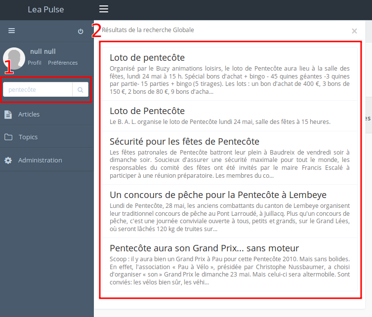
NB : Il n’est pas nécessaire de cliquer sur le bouton de soumission (en forme de loupe) pour déclencher la recherche. Cette dernière sera automatiquement déclenchée suite a une saisie de 3 caractères ou plus et après un délai de 400 millisecondes (sans quoi la requête serait déclenchée à chaque lettre saisie).
Utilisation :
<search-bar></search-bar>
Status Bar
Permet de faire une notification de status ressemblant à growl

Utilisation :
<status-bar [icon]="'refresh'" > Mise à jour disponible </status-bar>
<status-bar [icon]="'folder-open-o'" [class]="'info'" > Mise à jour disponible </status-bar>
<status-bar [icon]="'warning'" [class]="'warning'" > Mise à jour importante disponible </status-bar>
<status-bar [icon]="'warning'" [class]="'danger'" > Mise à jour critique disponible </status-bar>
Switch
TabPane ( Onglets )

Le composant doit figurer dans le template de la façon suivante :
<tabpane>
<tab [tabtitle]="...">
<mon-autre-component></mon-autre-component>
</tab>
<tab [tabtitle]="...">
code html
</tab>
</tabpane>
- tabpane sert à encadrer la liste des onglets qui seront regroupés
- tab sert à définir un onglet en particulier
- [tabtitle] est le titre que portera l'onglet
- Chaque balise tab peut contenir du html ou des composants Angular
Touch Button
Permet de créer un bouton flottant de style "polymere", contenant plusieurs autres boutons

Utilisation:
Treeview
Les composant de type "Page"
Le Dashboard
Le dashboard permet d'afficher une vue en onglets

Ces onglets sont définie comme cela, exemple :
<dashboard-container>
<dashboard-tab [title]="'Statistique'" [active]="true" [icon]="'bar-chart-o'"><dashboard-stats></dashboard-stats></dashboard-tab>
<dashboard-tab [title]="'Mes Articles'" [icon]="'file-text'">
ICI LE CONTENU DE MES ARTICLES
</dashboard-tab>
<dashboard-tab [title]="'Flux d\'activité'" [icon]="'list'">
ICI LE CONTENU DU FLUX
</dashboard-tab>
</dashboard-container>
les paramétres possible sont : title pour le title icon pour la classe font-awesome de l'icon (sans fa-) * active pour definir celui actif par défaut ils sont ensuite utilisés ensuite dans le menu "gris" et dans le fil d'ariane automatiquement
Dashboard / Statistique
Article / Liste
Interface générale
Une page de listing d’articles suivra toujours la structure suivante : Une barre de recherche simple, débrayable en un formulaire avancé.
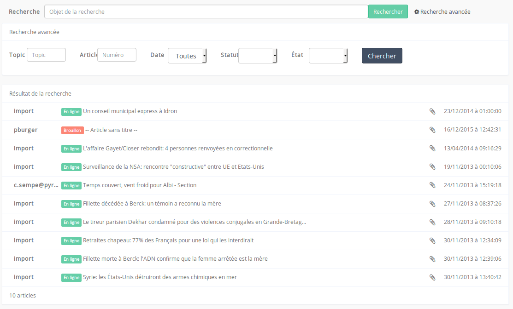
Recherche d'articles
La recherche déclenchera une requête Elasticsearch initialement paramétrée comme suit :
"query": {
"bool": {
"must": [
{
"multi_match": {
"query": "Objet principal de la recherche",
"fields": ["titre", "texte"]
}
}],
"should": [{
"match": {
"topics": "Objet principal de la recherche"
}
}],
"filter": []
}
}
Il s'agit ici d'un exemple de requête très basique. Sans entrer dans les détails des requêtes Elasticsearch établies par Léa-Pulse (qui feront l’objet d’au autre chapitre), il faut simplement retenir que la recherche portera en priorité sur le titre ainsi que le texte des articles, puis si des topics en relation à cette requête sont détectés alors le score du document en question sera favorablement pondéré. Dans le cas de critères de recherche purement filtrant (dates, état, statut…) le score de pertinence n’est pas impacté.
Dans le cas de la page "Mes articles" le filtre sur l'id de l'utilisateur courant sera automatiquement appliqué.
Article / Edition
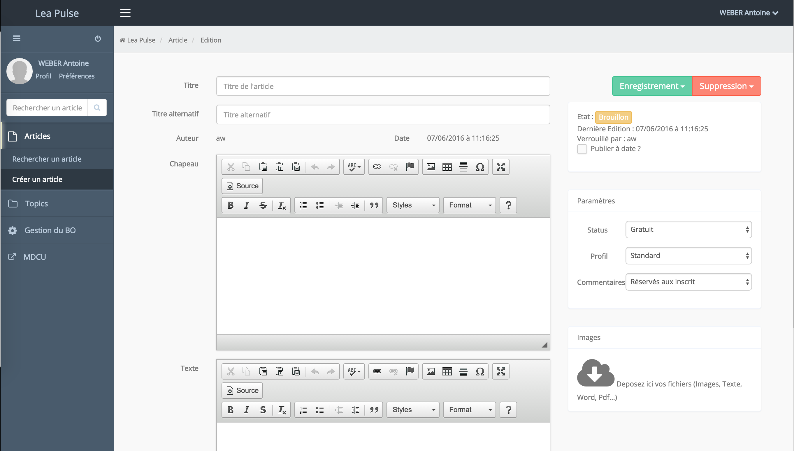
Gestion des utilisateurs
La page de listings des utilisateurs (gestion/user) permet de voir l'ensemble des utilisateurs du Back-office. La liste est contruite à partir du composant datatable.
- Le bouton Editer permet d'aller sur la page d'édition de user (/gestion/user/edit/{id}).
- Le bouton Supprimer permet de supprimer un utilisateur après la validation d'une bootbox qui s'affiche au clic sur le bouton.
- Le bouton Ajouter permet d'aller sur la page d'édition d'un user (/gestion/user/edit).
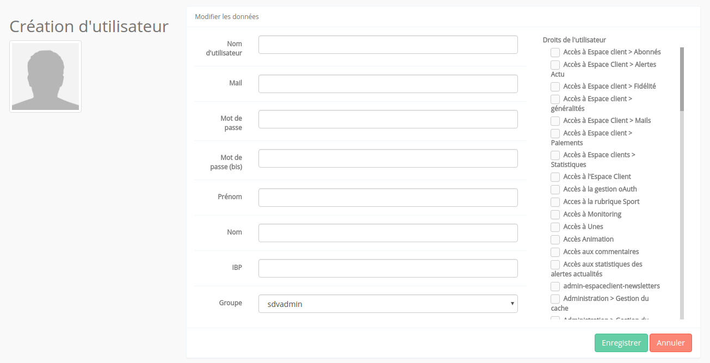
Sur la page d'éditon/création, on peut saisir les informations de base d'un user:
- Nom d'utilisateur: L'identifiant de connexion de l'utilisateur
- Email: Email de l'utilisateur
- Prénom et Nom
- Mot de passe et mot de passe (bis) servent à changer le mot de passe de l'utilisateur. S'ils ne concordent pasou si l'un des deux est vide, il ne sont pas envoyé lors de l'enregistrement.
- IBP: l'identifant de l'utilisateur sur la plateforme IBP. S'il n'en possède pas, un id lui sera ttribué à la première utilisation du service.
- Groupe: Permet de donner un ensemble de permissions à un utilisateur.
- Droits de l'utilisateur: La liste de toutes les permissions attribuables. Si on est en mode édition d'un user et qu'il appartient à un groupe, les checkboxes reprenant les permissions du groupes sont cochées et désactivées pour na pas être modifiées.
Gestion des groupes
La page de listings des groupes (gestion/groupe) permet de voir l'ensemble des groupes. La liste est contruite à partir du composant datatable.
- Le bouton Editer permet d'aller sur la page d'édition de groupe (/gestion/groupe/edit/{id}).
- Le bouton Supprimer permet de supprimer un groupe après la validation d'une bootbox qui s'affiche au clic sur le bouton.
- Le bouton Ajouter permet d'aller sur la page d'édition d'un groupe (/gestion/groupe/edit).
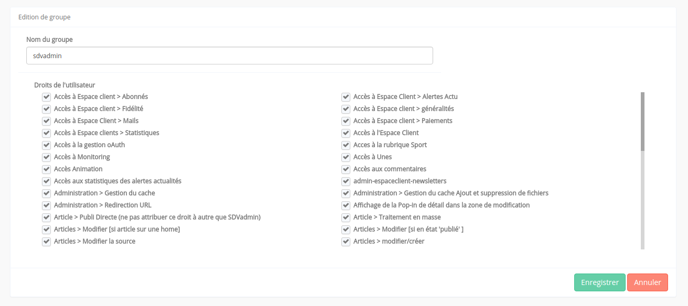
Sur la page d'éditon/création, on peut saisir les informations de base d'un groupe:
- Nom de groupe
- Permissions: La liste des permissiosns à cocher pour les accorder à l'ensemble du groupe
Gestion des permissions
La page de listings des permissions (gestion/permission) permet de voir l'ensemble des permissions. La liste est contruite à partir du composant datatable.
- Le bouton Editer permet d'aller sur la page d'édition de permission (/gestion/permission/edit/{id}).
- Le bouton Supprimer permet de supprimer une permission après la validation d'une bootbox qui s'affiche au clic sur le bouton.
- Le bouton Ajouter permet d'aller sur la page d'édition d'une permission (/gestion/permission/edit).
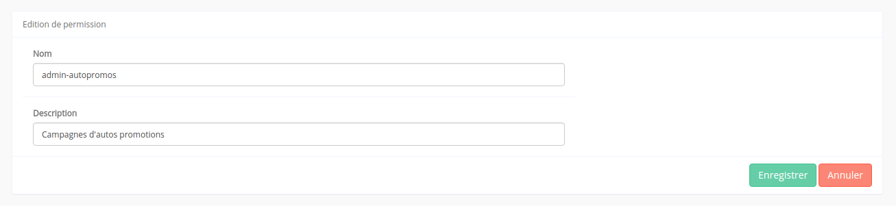
Sur la page d'éditon/création, on peut saisir les informations de base d'une permission:
- Nom: Le nom de la permission qui sera utilisé pour faire les tests d'accès
- Description: Une courte description de la permission qui sera utilisée pour l'affichage dans les listings
Gestion des menus
La page de listings des entrées du menu (gestion/menu) permet de voir l'ensemble des pages accessibles via le menu. La liste est contruite à partir du composant datatable.
- Le bouton Editer permet d'aller sur la page d'édition de l'entrée choisie (/gestion/menu/edit/{id}).
- Le bouton Supprimer permet de supprimer un élément du menu après la validation d'une bootbox qui s'affiche au clic sur le bouton. Si l'élement avait des sous-menu, ceux-ci sont rapatriés sur le menu de premier niveau.
- Le bouton Ajouter permet d'aller sur la page d'édition d'une entrée (/gestion/menu/edit).

Sur la page d'éditon/création, on peut saisir les informations d'une entrée de menu:
- Titre: Le nom qui sera affiché dans le menu.
- Parent: L'élément auquel ratacher l'entrée en cours d'édition. Si Aucun est selectionné, l'élément sera affiché en tant que menu principal.
- Icône de menu: L'icône à afficher avant le titre et à piocher dans la librairie Font-Awesome.
- Permission: Le choix de la permission nécessaire pour afficher l'élément. Si Aucune est choisie, l'élément sera visible pour tout les utilisateurs.
- Route: La route vers laquelle pointera l'élément en cours d'édition.
- Paramètres de route: Une liste de paramètres à associer à la route.
- Ordre: Un entier servant à déterminer la position d'un élément par rapport aux autres éléments ayant le même parent.
Gestion multisites
La page de gestion multisites (gestion/multisites) permet de lister, éditer et supprimer les différentes familles. La liste est contruite à partir du composant datatable.
- Le bouton Editer permet d'aller sur la page d'édition de la famille (/gestion/multisites/edit/{id}).
- Le bouton Supprimer permet de supprimer un élément après l'entrée du bon identifiant sur un prompt bootbox qui s'affiche au clic sur le bouton. Si la famille possédait des sites, ils seront également supprimés. Il s'agit donc d'une action à risque.
- Le bouton Ajouter permet d'aller sur la page d'édition d'une famile (/gestion/multisites/edit).
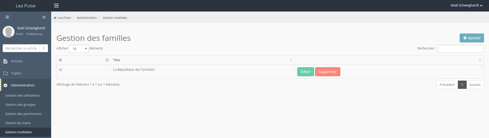
Sur la page de création, on peut saisir les informations de famille
- Nom de la famille: rien à rajouter
- Identifiant: Un identifiant de 5 lettres maximum qui servira dans le path des topics associés (ex: rp:www:politique pour la République des Pyrénées)
Dans le cas où l'on édite une famille existante, une datatable contenant les sites associés à la famille. Le fonctionnement pour les sites est le même que pour les familles.
Iframe
Le composant iframe permet d'afficher le contenu d'une page externe comme si il faisait partie de Lea Pulse. L'appel de ce composant se fait suivant deux types de routes lors de la création d'une entrée dans le menu :
- En utilisant la route Iframe et en ajoutant un paramètre nommé url. Cela génèrera une url du type /#/iframe?url=mon_url
- En utilisant la route IframeModule et en ajoutant les paramètres url et moduleName. Cela génèrera une url de la forme /#/iframe/moduleName
Topic / Liste
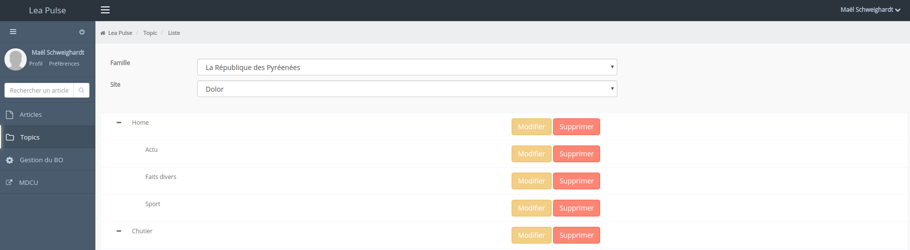
En entrée, le composant de liste des topics récupère les familles et sites depuis la collection config de la base lea_pulse_back. L'affichage de la liste des topics se fait par le biais de deux Select corespondant aux résultats de ces requêtes.
La sélection de la famille de topics fera apparaître le selecteur pour les sites, qui, une fois sélectionné permettra d'afficher uniquement les topics dont la correspondance sera faite entre la valeur des champs et le path des topics.
Exemple: si Famille = "lor" (Lorraine) et Site = "mp" (Metz Plage) alors path des topics affichés = lor:mp:(...)
Pour en savoir plus sur la génération de l'arbre des topics, voir la documentation sur le widget treeview.
Topic / Création
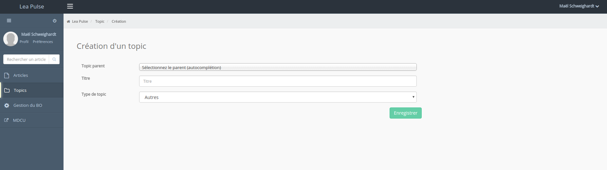
A l'initialisation, le composant récupère:
- le titre, le path, l'URI et la clé primaire (id_hierarchie) de tout les topics stocké en cache LocalStorage et Mongo, ou en faisant une requête sur la base MySQL depuis le BO Laravel5 si les données ne sont pas en cache.
- les types de topic depuis la variable de conf sfConfig du BO Legacy (/bo_api/apps/module/l2_pulse/actions/getSfConfigAction.class.php)
Pour enregister les topics (saveTopic()), le composant effectue une requête Form sur /lea_hierarchie/updateSimplifie.
Pour supprimer un topic (deleteTopic()), la requête est faite en Post sur /lea_hierarchie/delete.
Topic / Paramétrage
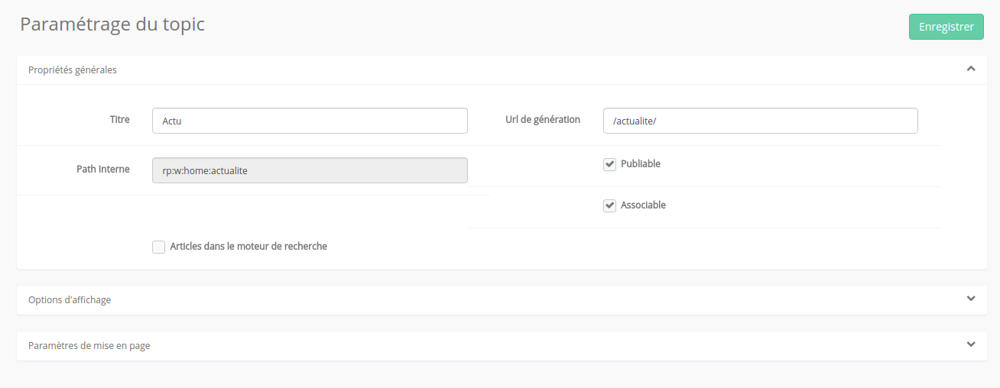
Si l'URL ne contient pas d'ID (topic/edit), on renvoie l'utilisateur sur la page de création de topic.
A l'initialisation du composant, on récupère la configuration depuis le BO Laravel5 qui contient toutes les metas qui sont requises par le site. Tous les sites ont une configuration commune, et éventuellement une configuration spéciale qui leur est propre.
Le composant génère automatiquement les fieldset et les champs en fonction de la configuration récupérée. La configuration se présente sous la forme suivante:
[
{
titre: "Le titre qui apparaitra dans le fieldset",
id: "un_identifiant_unique_sans_espace",
fields: [ //La liste des champs qui seront groupés ensemble
{
champ: "Le champ tel qu'il est dans la BDD. Pour les metas, utiliser la formulation meta.AAA",
label: "Le label tel qu'il appraitra dans le formulaire",
type: "le type de champ: string pour un input normal ou boolean pour une case à cocher",
disabled: "Généralement à false, ce champ permet de désactiver un input.",
heritable: "Booléen permettant de savoir si le champ peut hériter de la valeur de son topic parent.
Cela change aussi l'affichage du champ"
},
{
champ: "titre",
label: "Titre",
type: "string",
disabled: false,
heritable: false
},
{
champ: "path",
label: "Path",
type: "string",
disabled: true,
heritable: false
},
{
champ: "meta.associable",
label: "Associable"
type: "boolean",
disabled: false,
heritable: false
},
{
champ: "meta.type_page",
label: "Type page topic",
type: "string",
disabled: false,
heritable: true
},
....
]
},
{
...
},
...
]
Un champ value est ajouté à chaque élément field lors de l'appel au webservice pour connaitre la valeur actuelle. Si le champ est héritable, on ajoute aussi un champ parentValue afin de savoir si le champ hérite des valeurs de son topic parent.
Les Services
Breadcrumb ( Fil d'ariane )
Pour mettre en place un fil d'ariane, le service "services/breadcrumb" est disponible.
Fonctions disponibles:
- show: permet de re-afficher le dernier etat du fil d'ariane (s'il y en a un)
- hide: permet de cacher le fil d'ariane
- clean: permet de renvoyer l'état par défaut
- setBreadcrumb: permet de définir le tableau des liens du fil d'ariane
setBreadcrumb, prend en parametre un tableau, où pour chaque entrée les options disponibles sont:
- title:string, Définie le texte affiché pour le lien (exemple: "Article")
- icon:,string Définie la classe fontawesome a appliquer au lien (exemple: "file")
- url:,string Définie une url externe, à afficher dans une iframe (exemple: "http://www.sdv.fr")
- routerlink:string, Définie une route interne, pour appeler un composant (exemple: "Home")
- routerlinkparams:object, Définie les parametres a envoyer a cette route (exemple: {id: '2'})
Example d'utilisation dans un composant
`import {BreadcrumbService} from "../../_core/_services/breadcrumb";
....
constructor(
...
private _bread_serv: BreadcrumbService)
...
//on place le fil d'arine voulu
this._bread_serv.setBreadcrumb([
{
"title": "Article"
},
{
"title": "Edition",
"class":"active"
}
]);
...}
//On remet le fil d'ariane de base en sortant de la page
ngOnDestroy(){
this._bread_serv.clean();
}`
Bootbox (pop-in d'alert)
Permet de créer des pop-in de confirmation ou d'alerte dans la style de bootstrap
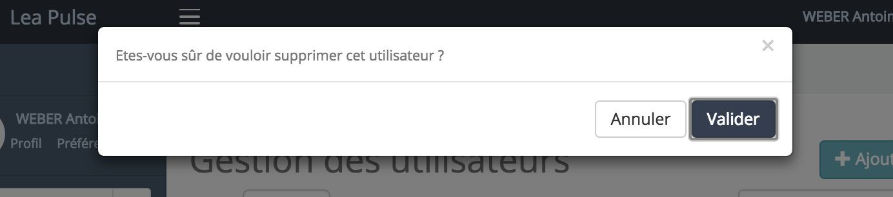
Fonction disponibles:
- alert: msg Pour afficher un message
- confirm: msg, callback(resultat) Oui ou non
- prompt: msg, callback(reponse) Poser une question ouverte
- dialog: Pour faire un dialog custom, voir les propriétés disponible Doc bootbox
Exemple: import {BootboxService} from '../../_core/_services/bootbox'; ... constructor( private _bootbox: BootboxService, ...
confirmDelete(id: number) {
this._bootbox.confirm('Etes-vous sûr de vouloir supprimer le bloc ' + id + ' ?', (result: Boolean) => {
if (result) {
//il a dis oui!, je supprime le bloc avec cet id
}
else{
// il a dis non!
}
});
}
__
Static Loader
Permet d'intégrer des scripts js ou css dans la page en vérifiant qu'ils ne sont pas intégrer plusieurs fois De plus on peut attentre le resultats avant d'effectuer d'autres actions
Config
Le service de config correspond au service homonyme du BO L5. Deux méthodes y sont définies:
setConfig(type: string, value: any);
getConfig(type: string);
- setConfig : permet de créer ou de mettre à jour un document de type type et de valeur value
- getConfig : permet de récupérer un tableau d'objet de type type.
Exemple d'utilisation:
`this._config_service.getConfig('sites').subscribe(sites =>
{
this.allSites = sites;
} });``
Pour une implémentation plus détaillée, voir le composant Topic / List.
Utilisateur
Ce service permet d'afficher des données sur les utilisateurs sans avoir à chaque fois à faire une jointure sur cette table. Ce service est bootstrappé dès le lancement de l'application (il ne doit donc pas figuré dans vos providers)

Variables: users_info : Ce tableau permet d'acceder a des données de user directement avec son id (par exemple dans un template). Le user doit avoir été chargé par une des méthodes au préalable dans l'appli.
Méthodes:
- getUtilisateurInfo(id):Observable
: permet de charger les données d'un user en particulier - getMultipleUserInfo(id_liste):ReplaySubject
: permet de charger les données de plusieurs utilisateurs en une requete - getAllUserInfo(): Observable
: permet de charger toutes les données utilisateurs (nécessaire pour les pages admins) - updateUser(user: Utilisateur, password: string, password_bis: string): permet de mettre à jours les données d'un user
- deleteUser(user: Utilisateur) : permt de supprimer un utilisateurs, ainsi que ces caches
- setIbpUserId(user: Utilisateur) : permet de mettre à jour le user IBP d'un compte utilisateur
Exemple d'utilisation:
import {UtilisateurService} from ".../sfguard/_services/utilisateur";
...
constructor(
private _users: UtilisateurService, ...
Template:
<span> Le prenom d'utilisateur {{_users.info[elem.user_id].sf_guard_user_profile.first_name}} et sa famille {{_users.info[elem.user_id].sf_guard_user_profile.last_name}} </span>
__
Notification
Http Lea
Permet de contacter les api du serveur léa legacy
Http L5
Permet de contacter les api du serveur laravel
Le service Twitter permet de récupérer les Top Trends actuels en France depuis l'API officiel. L'API nécessite une authentification OAuth2, un compte lié est donc requis pour communiquer avec l'API.
Informations du compte Twitter pour Lea Pulse:
- Login : lea_pulse / equipe-rnd@sdv.fr
- Mot de passe : leapulse
La communication avec l'API se fait depuis le BO Laravel. Les tokens d'authentification sont à dupliquer dans le fichier .env depuis le fichier .envexample.
Les directives
Auth Router
Le routeur authentifié permet de verifier si le changement de page demandé correspond à une route publique. Dans le cas contraire, on vérifie si l'utilisateur est connecté. Sinon on le redirige vers la page de Login, en enregistrant la route demandé pour une redirection future.
Les pipes
Les typings
Les typings permettent d'indiquer à Typescript et aux IDE, le contenu des fonctions et variables qui ne seront disponibles qu'aprés la compilation Javascript. C'est le cas de jQuery et d'autres plugins.